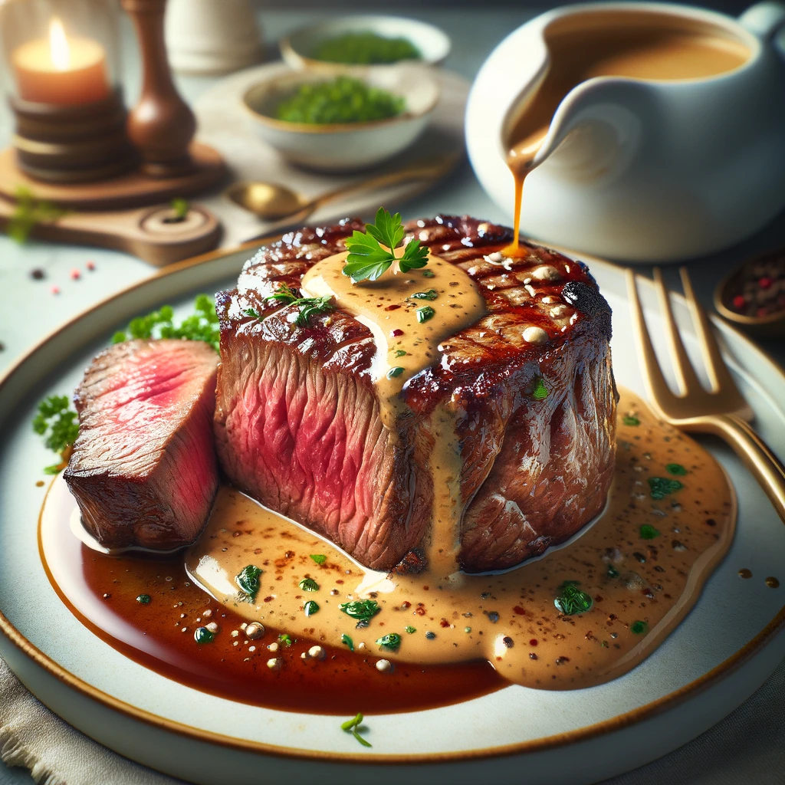

Café de Paris
30 Min.
Mittel
26.08.2024
Zutaten für
| 50 | g | Butter |
| 0.25 | Stk | Zwiebel |
| 0.5 | Stk | Knoblauchzehe |
| 0.5 | Stk | Sardellenfilet |
| 0.5 | TL | Kapern |
| 0.25 | TL | Dijon-Senf |
| 0.25 | TL | Tomatenmark |
| 0.25 | TL | Paprikapulver |
| 0.25 | TL | Currypulver |
| 0.25 | TL | Cognac |
| 0.5 | TL | Zitronensaft |
| 0.25 | TL | Weissweinessig |
| 0.25 | TL | Thymian |
| 0.25 | TL | Rosmarin |
| 0.25 | TL | Estragon |
| 0.25 | TL | Schw. Pfeffer |
| 0.25 | TL | Meersalz |
| 1 | Pr | Cayennepfeffer |
| 1 | Pr | Muskatnuss |
| 1 | Pr | Zucker |
| 0..5 | TL | Petersilie |
| 0.5 | TL | Schnittlauch |
| 0.5 | TL | Kerbel |
Zubereitung
90 Min.
26.08.2024
Zubereitungsschritte:
- Butter vorbereiten: Die weiche Butter in eine grosse Schüssel geben und mit einem Handmixer oder Schneebesen cremig rühren.
- Zwiebel und Knoblauch anschwitzen: In einer kleinen Pfanne etwas Butter oder Öl erhitzen und die fein gehackten Zwiebeln und Knoblauch darin glasig dünsten. Anschliessend abkühlen lassen.
- Zutaten hinzufügen: Die abgekühlten Zwiebeln und den Knoblauch zur Butter geben. Anschliessend die gehackten Sardellenfilets, Kapern, Dijon-Senf, Tomatenmark, Paprikapulver, Currypulver, Worcestersauce, Cognac, Zitronensaft und Weißweinessig hinzufügen. Alles gut vermischen.
- Kräuter und Gewürze einarbeiten: Nun die getrockneten Kräuter (Thymian, Rosmarin, Estragon), den schwarzen Pfeffer, das Meersalz, Cayennepfeffer, Muskatnuss und Zucker in die Buttermasse einarbeiten. Zum Schluss die frischen Kräuter (Petersilie, Schnittlauch, Kerbel) unterheben.
- Abschmecken: Die Café de Paris Butter abschmecken und bei Bedarf noch etwas mehr Salz, Pfeffer oder Zitronensaft hinzufügen.
- Formen und Kühlen: Die fertige Butter auf ein Stück Frischhaltefolie geben und zu einer Rolle formen. Die Enden der Folie fest verdrehen, um die Rolle zu stabilisieren. Anschließend die Butter im Kühlschrank mindestens 1 Stunde kühlen, damit sie fest wird.
- Servieren: Die Café de Paris Butter in Scheiben schneiden und als aromatische Beilage zu gegrilltem Fleisch, wie Steak, servieren.
Rezept erstellt von

Lee-Roy Romann